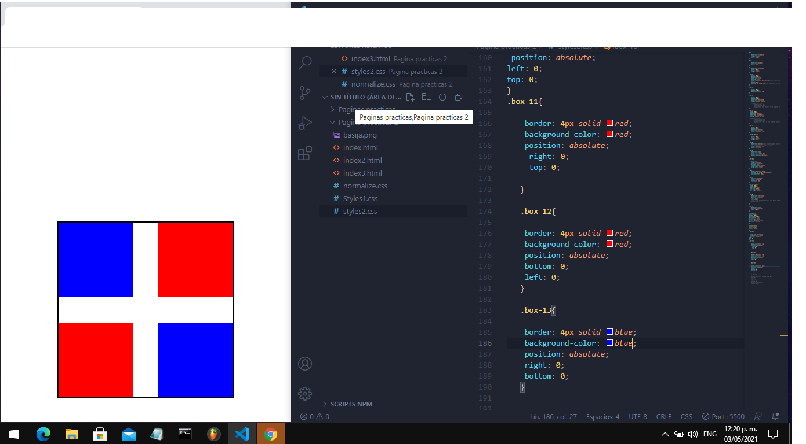

Proyecto-2
Unos de mis proyectos preferidos , aunque su complejida no es mucha , muestra que con creatividad puedes hacer muchisimas cosas en Css ... La imaginacion es el limite.
Unos de mis proyectos preferidos , aunque su complejida no es mucha , muestra que con creatividad puedes hacer muchisimas cosas en Css ... La imaginacion es el limite.